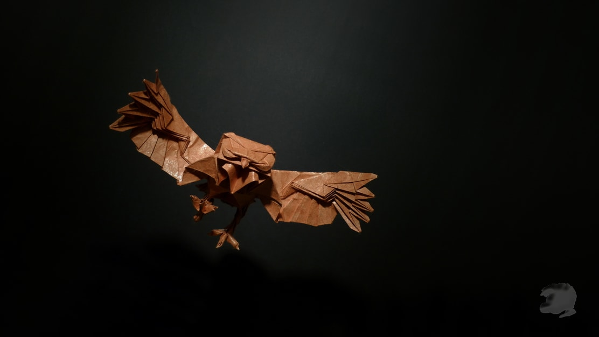
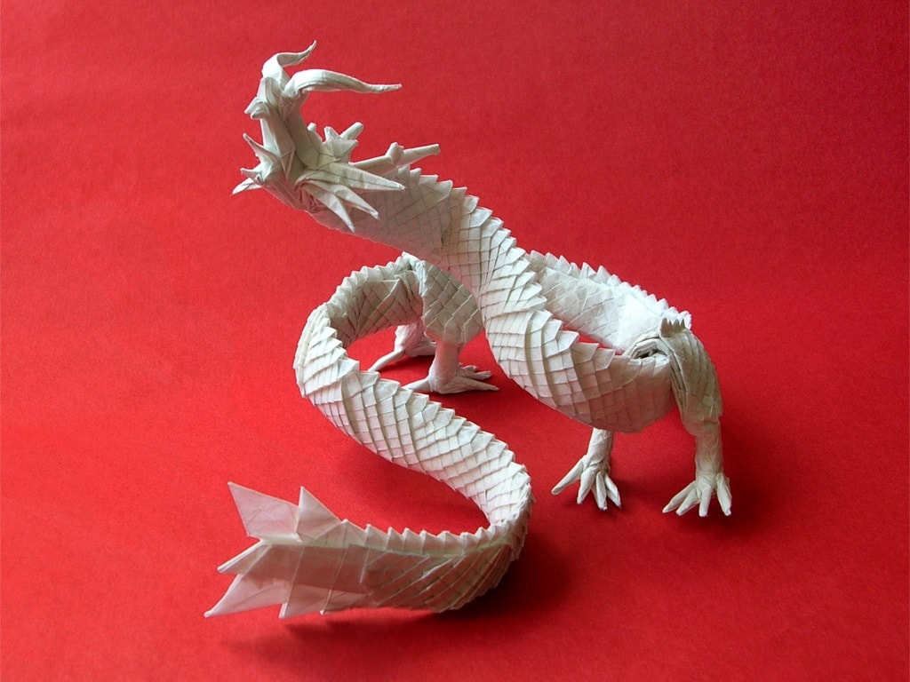

About Us
Follow Us
Interesting Facts about Snakes
- Snakes don't have eyelids.
- Snakes can't bite food so have to swallow it whole.
- Snakes have internal ears but not external ones.

Interesting Facts about Owls
- A group of owls is called a parliament.
- Barn owls can be recognized by their heart shaped face.
- Owls can turn their heads as much as 270 degrees.

Interesting Facts about Dragons
- A dragon can look like a snake with wings, or like lizards.
- Some dragons live in caves.
- A dragon has special powers.